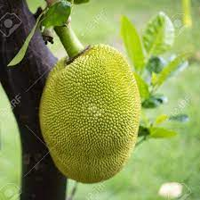

WELCOME TO
CHAKKA TRIBE
Welcome to Chakka Tribe.This tribe is true memers only.We have had a generation of chakka lords,first one being Lord Shaggy Rogers and his companion Scooby Dooby Doo.We have many allies and foes,like Watermelon tribe (Ally) and Berry Tribe(Frick them).United discluding rebellions,we are the great tree tribe.We all rule the tribe united,But sometimes people want war for either self rule over the world,or for no apparent reason.We have many whatsapp groups and discord servers which you can join.Of course,all chakka related things can't easily be explained in a paragraph,thus the site!Enjoy!